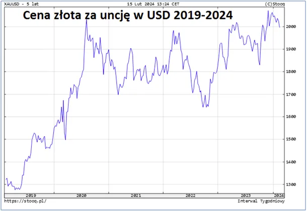
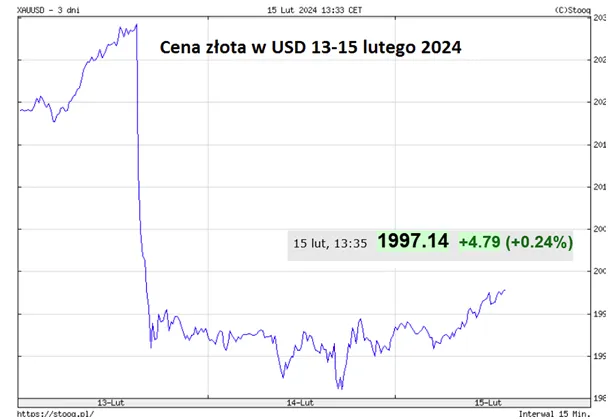

Złoty pojedynek media - ludzie
W ostatnim tygodniu po poprawie rentowności obligacji gwałtownie potaniało złoto i z 2030 USD/uncję odbiło się o cenę 1985 USD. Posypały się nachalne komentarze, że stały wzrost ceny kruszcu ponad 2000 USD był chwilowy i teraz t tylko spadki i spadki. Cała prasa finansowa jest zalana takimi komentarzami, które oczywiście mają wpływ na decyzje milionów małych ciułaczy. Przez ostatnich 5 lat złoto podrożało ponad 50%, choć uczciwie jest napisać, że to dolar stracił połowę swej wartości z powodu dodruku waluty. Na zachodzie rynki są w recesji, tylko amerykańska zbrojeniówka się kręci na wysokich obrotach, reszta się zwija, właśnie ogłoszono, że Japonia się zwija a nie rozwija, i to zwija się szybciej niż Niemcy.

Tymczasem "lud" dalej kupuje złoto a nie papierowe obligacje USA i jego cena po chwilowej panice szybko wraca w kierunku psychologicznej bariery 2000 USD. Na ceny złota mają duży wpływ detaliczne rynki Azji, gdzie setki milionów prostych ludzi często robi zakupy fizycznego złota a nie "papierowych gwarancji".

Masy ludowe poruszają się zgodnie z medialną narracją, ale Ci, którzy kupują złoto z myślą o swych dzieciach i wnukach mają spory dystans do "prawdy prasowej" i trzymają się prostych zasad jak "Lepszy wróbel w garści niż gołąb na dachu".
Paweł Klimczewski